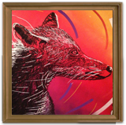

Luvi ＆ 高橋益実
■メッセージ：
今、この世の中に存在するもの
それは生まれた時から当たり前に在って
我々が生きていく中で知らずに消えていく
無数の世界の片隅からこの世は加速していて
人々は昨日を忘れ、その速度は増していく
長い歴史の中で未だに存在するもの
残した人の在り方や考え、生き方を
消えていったものを忘れない心を
僕は【MIracl World】と呼び、様々な技法で表現した
また、素材には廃材を使用して、使用した色は白と黒
時が経っても目の前にあるものが消えないことを祈り
そして消えそうなものを残していくため絵画を通して伝えたいと思う
■Luvi
Tokyo,Paris,New york,Berlin,Torontoなどで活動しているArtist。
作品数は実に数百点におよびpop art,graffiti art,などを基調に
近年では店の内装デザインや家具などの製作もこなす。
自身がオーナーを務めるAtelier101は今年の12月より世田谷からParisに移転の予定。
今後もインターナショナルに活動を視野に入れている。
■高橋益実
Atelier101のファッションデザイナー兼アーティスト。
繊細なタッチと独特の色使いは他のアーティストとは違った明るさ、表情、テーマを見せてくれる。
表情豊かな彼女の作品は女性のファンを中心に楽しませてくれる。
今年の12月からは活動拠点をParisに移す。
ますます成長する彼女からは今後も目が離せない。
■Fecebook：http://www.facebook.com/luviart1224
■掲載期間： １１月１５日～１１月２９日